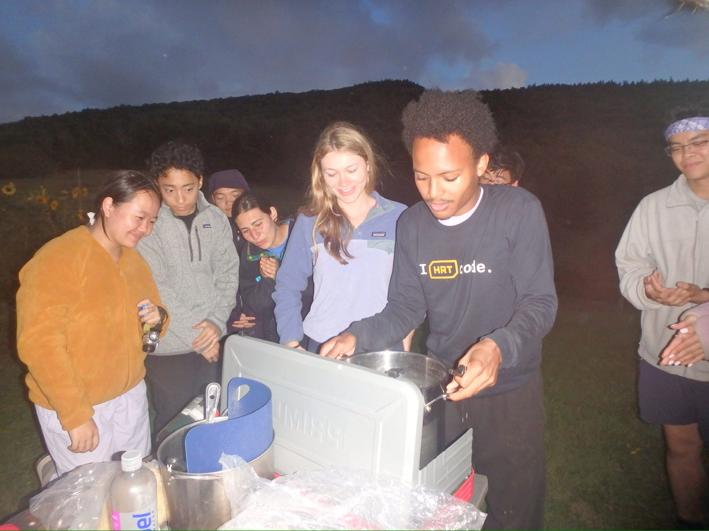
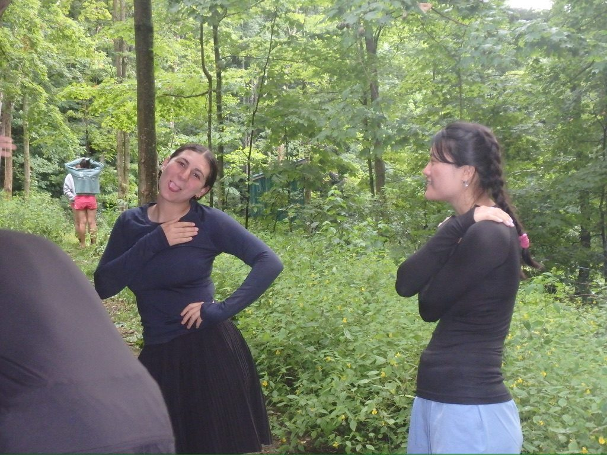
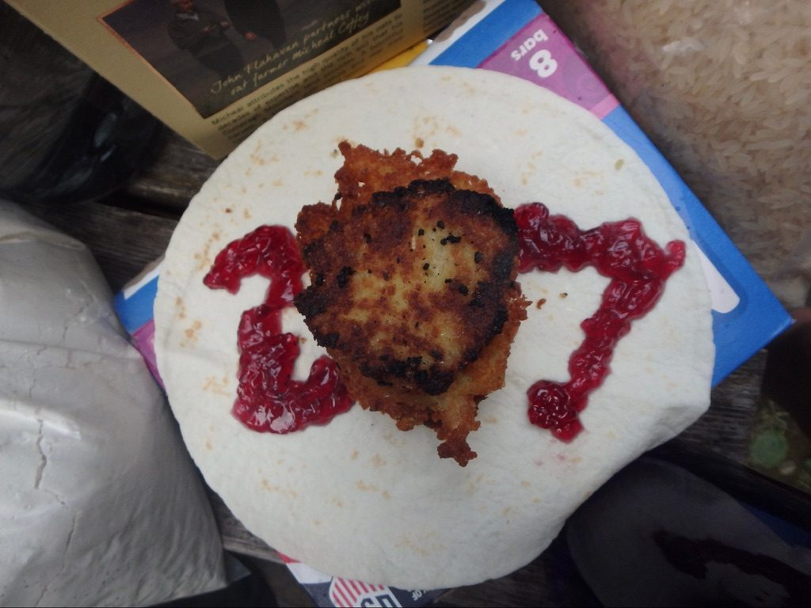
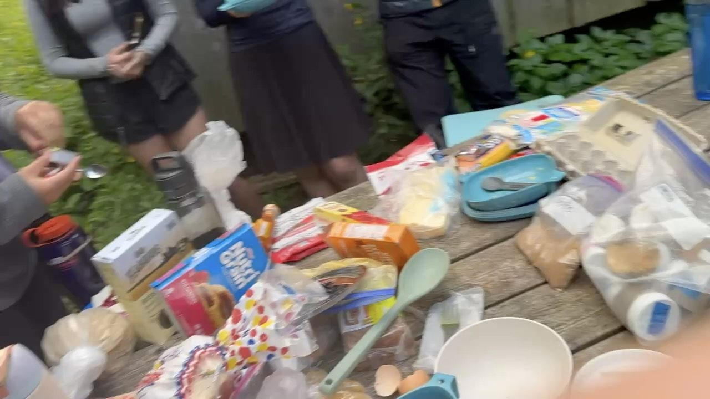

FOP is for every first-year. Whatever you need to feel comfortable and fully yourself outdoors, tell us when you register and your leaders will plan your trip around it. Below are examples of how FOP can accommodate first-years, along with guidance on choosing the trip that fits you best.
Religious Observance
Example: A participant who observes Shabbat was placed on a trip where the group stayed at camp on Saturday. Meals were cooked on Friday afternoon, and no hiking was planned until Shabbat ended.

“I was nervous I'd have to choose between FOP and keeping Shabbat. Instead my leaders planned the whole trip around it, and that Saturday at camp ended up being my favorite day.”
Dietary Needs
Example: A participant who keeps kosher had certified kosher food packed separately, with a dedicated pot and utensils, so they could cook and eat with the rest of the group.


“I didn't have to eat separately or bring my own food. My group even learned to make latkes with me on the camp stove.”
Injuries & Physical Limitations
Example: A participant with a broken ankle in a walking boot was matched with a site-based trip, with short day hikes on gentle terrain, a lighter pack, and leaders who planned rest stops along the way. Recent surgeries, sports injuries, chronic conditions and disabilities can all be accommodated in a similar way.
“I almost didn't sign up because of my injury. FOP found a trip I could actually do, and I never felt like I was holding anyone back.”
Privacy & Comfort
Example: A participant who wanted more privacy for changing and sleeping had a separate tarp set up nearby, so they could still be part of the group at camp.
“I only had to mention it once. My leaders took care of it quietly, and nobody made it a big deal.”
Choosing the Right Trip
Each trip type asks something different of your body. If you need a lighter trip, a site-based trip is usually the best place to start, and you can always talk to us before you choose.